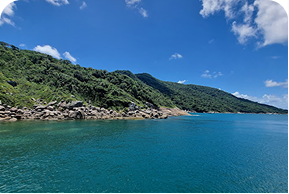
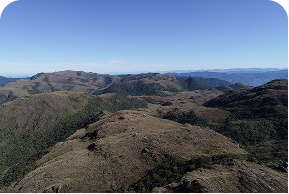

UNIDADES DE CONSERVAÇÃO
Conheça as unidades de conservação cadastradas no sistema e acompanhe as comunicações enviadas pela população.
Penha - SC
Parque Natural Municipal da Galheta
Área de preservação ambiental com trilas e vegetação nativa.
Instituto do Meio
Ambiente de SC (IMA)

Bombinhas - SC
Reserva Biológica Marinha do Arvoredo
Reserva marinha protegida com rica biodiversidade.
Instituto Chico Mendes de
Conservação da Biodiversidade

Florianópolis - SC
Parque Estadual da Serra do Tabuleiro
Maior unidade de conservação de Santa Catarina com rica diveersidade.
Instituto do Meio
Ambiente de SC (IMA)

Balneário Camboriú - SC
Área de Proteção Ambiental Costa Brava
Área de proteção ambiental com ecossistema costeiro.
Instituto do Meio
Ambiente de SC (IMA)